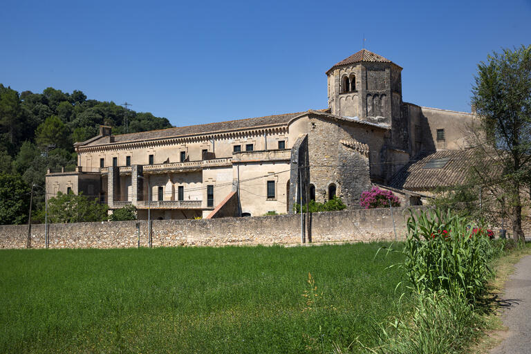

Visita · Girona
El orígens del monestir es remunten al segle IX, quan el monjo Sant Daniel morí decapitat a Arles de Provença l'any 888, durant el domini àrab. Els seus deixebles fugiren amb el seu cadàver…